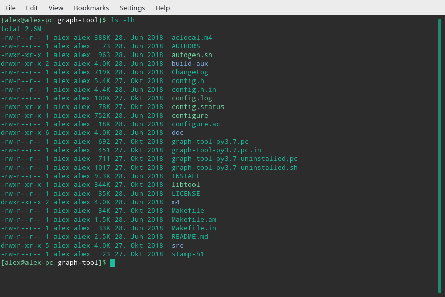

#4 Introduction to the Command-line
Alex Flückiger
Faculty of Humanities and Social
Sciences
University of Lucerne
24 March 2022
TerminalzshUbuntu 20.04 LTSBashUSER@HOSTNAME:~$~ refers to /home/USER
Build small programs that do one thing
and do it
well. 🤓
command -a --long_argument FILE # non-working example commandecho "hello world" # print some text
man echo # get help for any command (e.g., echo)hierarchical filesystem 🌲
absolute path starting from top-level directory
/home/alex/KED2022/slides/KED2022_01.htmlrelative path looking from current directory
KED2022/slides/KED2022_01.html.
├── README.md
└── lectures
├── images
│ └── ai.jpg
├── html
│ ├── KED2022_01.html
│ └── KED2022_02.html
└── md
├── KED2022_01.md
└── KED2022_02.md👍 Only relative paths work across systems
shortcut names of directories
. current dir.. parent dir~ home dir (e.g. /home/alex)find your files on Windows
/mnt/c/Users/YOUR_USERNAME/documentspwd # show absolute path of current directory
ls # list content of current directory
ls -lh # list with more information
ls dirname # list content of directory dirname
cd .. # change directory to go folder up
cd dir/subdir # go to folder dir/subdir (two folders down)open . # open path in finder (macOS)
explorer.exe . # open Windows Explorer in WSL Ubuntu (Windows)more text.txt # print content (space to scroll)
head text.txt # print first 10 lines of file
tail -5 text.txt # print last 5 lines of fileopen text.txt # macOS
wslview text.txt # WSL Ubuntu (Windows)TABSPACECTRL + Cq or CTRL + Dtouch test.txt # create a new file
mkdir data # make a new directory
mkdir -p data/1999 # make a new directory with a subfoldercp test.txt other/. # copy file into other folder, keep its name
mv test.txt other/new_name.txt # move or rename a fileWatch out, there is no recycle bin. No way back!
rm old.txt # remove a file
rm -r old_data # remove a folder with all its filestmp.cd and print its
absolute path using pwd.touch to create a new file called
magic.txt in tmp.magic.txt to
easy_as_pie.txt.mv command.cd and
ls.?*mv data/*.txt new_data/. # move txt-files from to another subfolder
cp *.txt files/. # copy all txt-files in a single folderls *.txt # list all files with the suffix .txt (in current directory)# search on filename
find /path/to/dir -name "*speech*" # find files in specific directory
locate -i pattern_1 pattern_2 # global search of files/folders
# search on content
grep -r "Europe" /path/to/dir # find all files containing X in a directory touch text_{a..c}.txt
# is equivalent to
touch text_a.txt text_b.txt text_c.txt
mkdir {2000..2005}{a..c}
# is equivalent to
mkdir 2000a 2000b 2000c 2001a 2001b 2001c ...>>>| (pipe)echo 'line 1' > test.txt # write into file
more test.txt | tail -1 # pass output to next command cat part_1.txt part_2.txt # concatenate multiple files
cat *.txt > all_text.txt # merge all txt into a single onetext_1.txt vs. textsSOURCE/YEAR/speech_party_X.txtfind_all_pdf.sh#!/bin/sh
echo "This is a list of all PDFs on my computer:"
locate -i /home/*.pdf.sh
# precedes comments#!/bin/shbash SCRIPTNAME.shCreate a new file with touch.
Write the following content into that file, one line at a time using the append operator:
How about making programming a little more accessible? Like:
from human_knowledge import solutionMake sure that the content was written into that file using
more.
Navigate up and down in in your filesystem using cd
and list the respective files per directory with ls. Where
can you find your personal documents? Print the absolute path with
pwd.
A hint to Windows users as they are working in a Ubuntu subsystem, have
a look at: /mnt/c/Users
Read man ls and write an ls command
that lists your documents ordered
Use the | and > operators to write
the 3 “last modified” files in your documents folder into a file called
last-modified.txt on your desktop (desktop is also a
directory). It is a single command performing multiple operations, one
after another.